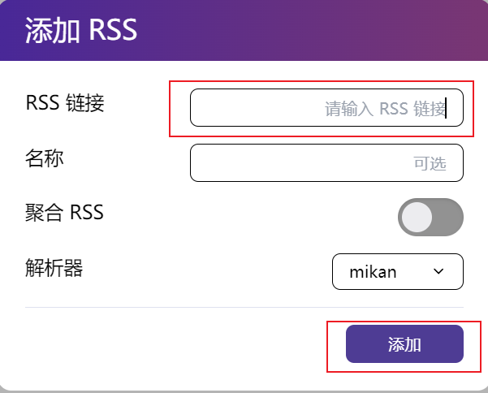

自动化追番：从 AutoBangumi 回到 qBittorrent RSS
序言
AutoBangumi 是一款“基于 RSS 的全自动追番整理下载工具”（以下简称 AB），很适合我这种同时使用 qBittorrent （以下简称 QB） 和 Jellyfin 的用户。在使用 AB 追了一个季度的番剧后，我对于 AB、Jellyfin等软件以及 RSS、刮削等概念有了更深的理解。尽管 AB 提供了自动化，但引入它也增加了追番流程的复杂度 —— 尤其表现在 AB 出问题时。
回顾以往使用 QB RSS 功能的经历，加上新的理解，我选择不再使用 AB，而是使用 QB RSS 来代替。尽管在每个季度追新番时的步骤增加了一些，但整个系统的复杂度和资源占用量降低了。总的来说，我对这个改变是满意的。
自动化追番流程
flowchart LR
subgraph g1[RSS订阅器]
a1[AB] ~~~ a2[QB ]
end
subgraph g2[RSS下载器]
b1[AB] ~~~ b2[QB]
end
subgraph g3[torrent下载器]
c1[QB] ~~~ c3[Transmission ]
end
subgraph g4[下载后任务（可选）]
d1[邮件通知下载完成] ~~~ d2[修改下载视频名] ~~~ d3[创建硬链接]
end
subgraph g5[Jellyfin（插件）刮削]
e1[Bangumi] ~~~ e2[AniDB] ~~~ e3[TMDB]
end
g1-->g2-->g3-->g4-->g5如图，整个自动化追番流程分为五个步骤：
- RSS 订阅器：通过订阅 Mikan 等网站的 RSS 链接，获取一部番剧每一集的信息（其中最重要的是 torrent 信息）。RSS 订阅器的作用是定时获取最新的内容，因此更常见的使用场景是获取新的文章。
- RSS 下载器：根据 RSS 订阅器获取的新的剧集信息，下载番剧。RSS 下载器知道哪些是已经下载了的，哪些是待下载的，因此总是下载新的剧集。
- torrent 下载器 —— 没啥好介绍的。
- 下载后任务（可选）：这个 post-download tasks 的涵盖范围极广。以下是一些可能的下载后任务：
- QB 可以设置『torrent 完成时运行外部程序』，通过脚本执行任意功能，调用任意其他程序，比如邮件通知。
- AB、Sonarr 等软件可以在下载后更新视频名称，使之适合刮削。
- 如果下载目录和 Jellyfin 媒体目录是分离的，为了节省硬盘寿命，可以在媒体目录中创建对应视频文件的硬链接，而不是移动视频文件本身。（硬链接只能在同一文件系统内使用）
- Jellyfin（插件）刮削：Jellyfin 定期扫描媒体库，如果用户选择自动刮削（即从网络获取元数据），那么 Jellyfin 会根据视频名称尝试获取元数据（有可能失败）。这一部分的功能是由 Jellyfin 插件实现的，默认的是 TMDB，但 Bangumi 和 AniDB 的效果更好。
AB 的作用
当我们要订阅一部新番时，首先获得 RSS 链接，然后点击『添加 RSS』： 
然后在主页可以看到该动漫的信息：
AB 会自动订阅该 RSS，同时在 RSS 下载器中添加一条新的规则。当有了新的一集后，RSS 下载器将视频下载到 动漫目录/番剧名/Season 1/ 下。下载完成后，AB 会将视频重命名。
动漫目录是我们预先在 AB 中配置的，是 QB 的下载目录；番剧名/Season 1/是 AB 自动生成的，为了符合 Jellyfin 媒体库的结构；- 视频重命名是 AB 自动进行的，为了方便 Jellyfin 刮削；
可以看到，AB 确实是高度自动化的，成功实现了『 RSS 链接与 torrent 下载器之间』和『torrent 下载器与 Jellyfin 之间』的自动化。但是，在实际使用时，我没有开启视频重命名的功能，Jellyfin 依旧可以准确识别。因此，AB 在我看来只是一个方便的 RSS 订阅器和 RSS 下载器。
使用 QB RSS 代替 AB
了解了 AB 的作用后，不难发现 QB RSS 功能可以平替 AB。好处是显而易见的：
- 系统中的组件减少了，资源占用和复杂度降低了；
- QB RSS 订阅器可以展示目前已有的番剧信息，而 AB 不能；
- QB RSS 下载器功能更加强大；
唯一的缺点是不能展示番剧的海报，这可以接受。
QB 订阅一部新番的流程如下：
- 订阅番剧的 RSS 链接：
- 在 RSS 下载器中创建新的规则：
- 规则定义：比如只要 1080p 或者只要简中字幕；
- 保存到其他目录：仿照 AB 的操作，设置为
动漫目录/番剧名/Season 1/。如果是第二季就写Season 2； - 选择刚才创建的 RSS 订阅规则；
- 点击保存；
mikan 的 RSS 链接的最小粒度是 (bangumiId, subgroupid) 的二元组，即 (番剧, 搬运组/字幕组)。当然，我们也可以选择由 bangumiId 确定的 RSS 链接，此时会包括所有搬运组/字幕组。
下载规则是和番剧绑定的，因此其中可以包括多个搬运组/字幕组。但 Jellyfin 会如何识别多个同一集的视频？我没有尝试过。